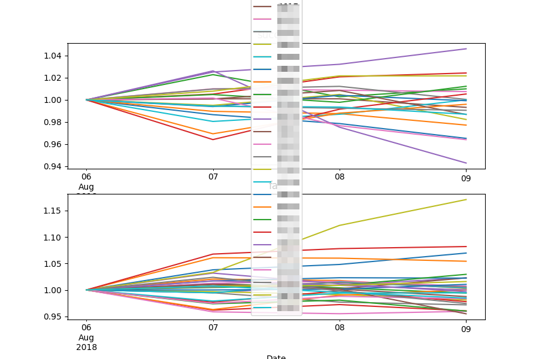

データサイエンティフィックまとめ
夏休みだったんで、このブログ用のスクリプトを整理していた。 あんまり見た目は変わらないかもしれないけど、スッキリしたんで、 少しはメンテナンスしやすくなるはずだ.. 特にこの見出しごとのリンクがちゃんとパーマネントリンクになった。 アンカーは相変わらず使ってるんだけどね。
この間から実験として株価予想を行っている。 ネタとしてはベタだけど、実用的だし、面白いかなあと思って試している。
パラメータを適当に加工して1000日間学習させた。 ただし、各銘柄でモデルは個別のものを生成している。 最新のデータよりも3日前まで学習させ、 そのモデルで3日後までの株価を予想させた。
結果は以下。 上部のグラフが買いシグナルとモデルが判断したもの、 下部のグラフが買いシグナルと判断しなかったものだ。

できれば偏ってほしいんだけど、あまり偏ってないようにみえる‥
ランダムフォレストって決定木の集まりだと思うんだけど、 そうするとグリッド状に決定面が決まるはずだ。 なんとなくこれだとうまくいかない気がするんだよなあ。
ニューラルネットワークとか使わないといけないのかなあ。
ちょいメモ
yasnippet
どうもyasnippet を今まで使い切れてなかった。 謎の挙動をしめすんだけど、 company-mode と競合してたみたいだ。
yasnippet を起動しようとすると company-mode が現れて うまく補完できないのだ。 たとえば c-x i と tab とかで両方の機能を分けてもいいんだけど、 たぶん先人がうまいことしてるんじゃないの、と調査したところ、ヒット。
Get Company to show suggestions for Yasnippet names | StackExchange
これがなかなかうまくいった！
ruby の rb
rbというツールがあるみたい。
9行から成るというすごいツールだ。 まあ、標準入力を受け取って実行してるだけってことなんだろうけど
裸のrubyでもできる。
件の rb を用いると以下のようになるが
docker ps | rb drop 1
は素の ruby だと以下のようにかける
docker ps | ruby -e 'print STDIN.map{|l| l}.drop(1).join'
もしかしたら、もうちょっと単純にかけるかもしれない。 要するにあまり導入する動機がみあたらない‥
なにかが圧倒的に便利になるならいいんだけど、 コミッタの趣味ライブラリなかねえ‥
AgileやDevOpsを日本の現場に導入できるのか
なかなか現場感のあるポスト。
レガシーな組織だと、開発チームがコントロールできる工程というのは どうしても限られてしまう。 具体的には、要件分析や要件定義といった上流工程や、システムテスト、 受入れ検査などの品質担保工程はたいていの場合違うチーム （部署や会社といったほうが妥当だろうか）が担当するだろう。
この場合、どうしてもウォータフォールに頼らざるを得ない、 というのが現場でよくある状況だと思う。 工程がそのままチームに分担され、 責任をそれぞれ追う必要があるからだ。
ここで、アジャイルを無理やりどおり適用しようとすると、 各チーム、マーケティングから品質管理部門までが 一緒になって開発をするというエクストリームな開発になってしまう。
それはそれである種の理想形なんだろうけど、 全員が参加するってのは、かなり無理があるだろう。 そもそも開発チームには外注が入っていることもおおい。 そういった場合には一堂に会することがそもそも 難しい場面も多いと思う。
結局、よほど全員がアジャイル開発の必要性を感じているとき （プロトタイピングやなにかの検証）以外は、 アジャイル開発を適用するのは難しい。
問題は、果たして開発チームは諦めてレガシーなウォータフォール 開発を行わなければならないか、ということだ。
アジャイルの知見が十分たまった今、一部取り入れることも 可能になってきたように思う。例えば製造工程にCIを適用する、 などである。
CIは開発工程の中のコーディング、単体テスト、配備までを 自動化するアジャイル手法である。 しかし、アジャイルのみに適用できる手法ではなく、 ウォータフォールでも全く問題なく導入できる手法でもある。
こうすることで、モダンな開発手法を取り入れつつ、 現状の組織を維持することができるのではないのかと思う。
全てを内製でまかなえない日本の現場では現実的な解かもしれない